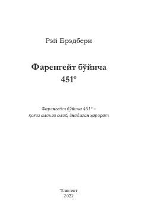

FBKitoбlar taqiqlangan kelajakdagi jamiyat va inson erkinligi uchun kurash haqidagi ilmiy-fantastik roman.
Kitoblar taqiqlangan va o't o'chiruvchilar ularni yoqib yuboradigan kelajakdagi totalitar jamiyat haqidagi mashhur fantastik roman. Bosh qahramon Guy Montag o'z kasbiga va yashab turgan tuzumiga shubha qila boshlaydi, natijada uning ongida inqilobiy o'zgarishlar yuzaga keladi. Asar jamiyatdagi erkinlik, fikrlash va insoniylikni saqlab qolish mavzularini chuqur yoritib beradi.